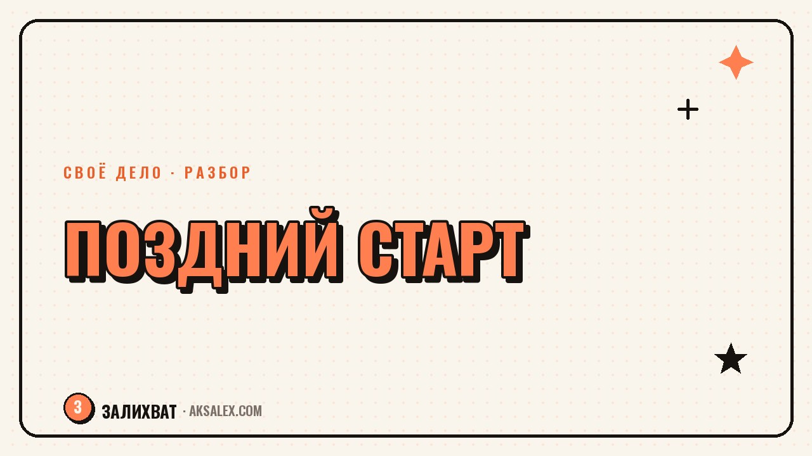

Поздний старт: как найти своё дело, если начал позже других

Листаешь блог человека, который в твоём возрасте уже построил дело, а у тебя всё ещё черновик идеи в заметках. Мысль «я начал слишком поздно» - одна из самых частых причин, по которой люди вообще не пробуют заняться своим делом. На деле же сроки чужого пути ничего не говорят о твоём: у каждого своя точка старта, и сравнение с чужим расписанием только крадёт энергию, которую стоило бы потратить на первый шаг.
Откуда берётся чувство опоздания
Чувство, что ты опоздал, почти никогда не основано на фактах рынка - оно строится на одной случайно выбранной точке сравнения. Ты видишь блогера, который моложе тебя и уже зарабатывает на своём деле, и мозг считает это нормой. При этом остаются невидимыми десятки людей, которые начали своё дело в 45, 55 или 60 лет и у них получилось.
Почему сравнение с чужими сроками обманчиво
- Ты видишь результат чужого пути, а не стартовые условия и ресурсы, которые у него были
- Соцсети показывают успешных людей твоего возраста чаще, чем обычных - это искажает картину
- У каждого своя скорость обучения и свой набор обстоятельств, из-за которых путь занимает разное время
- Опыт, который кажется потерянным временем, часто становится уникальным преимуществом в новом деле
Нет единого расписания, по которому положено найти своё дело к определённому возрасту. Есть только твой путь, и момент, когда ты начинаешь - уже часть этого пути, а не опоздание на него.
Чем опыт позже старта сильнее, чем кажется
Тот, кто пробует новое дело в 20 лет, обычно начинает с нуля во всём: без связей, без денег, без понимания, как работают переговоры. Тот, кто приходит к своему делу позже, часто уже умеет то, что молодому только предстоит освоить - вести переговоры, считать бюджет, доводить проект до конца даже когда трудно.
Это не означает, что поздний старт легче - он другой по характеру. Вместо вопроса «хватит ли сил научиться всему с нуля» стоит задать вопрос точнее: что из накопленного опыта перенести в новое дело прямо сейчас, без необходимости учиться заново.
Что обычно уже есть у тех, кто начинает позже
- Понимание, как вести себя с клиентами и партнёрами в конфликтной ситуации
- Насмотренность - опыт наблюдения за разными профессиями и сферами
- Финансовая подушка или стабильный доход, который снижает риск первого шага
- Умение доводить дело до конца даже без постоянной мотивации
Как перестать считать годы и начать действовать
Пока внимание занято подсчётом «сколько лет я уже потерял», на само дело энергии не остаётся. Полезная практика - заменить вопрос о возрасте на вопрос о следующем шаге. Не «почему я не начал раньше», а «что я могу сделать на этой неделе, чтобы продвинуться хоть немного».
| Мысль, которая мешает | Вопрос, который помогает |
|---|---|
| Я начал слишком поздно | Что я могу сделать уже на этой неделе |
| У других это заняло меньше времени | Какие у меня есть ресурсы, которых не было у них |
| Все ниши уже заняты людьми моложе | Какой опыт есть только у меня и нигде больше |
| Поздно пробовать что-то новое | Что случится, если я попробую прямо сейчас |
Как рассказывать о своём пути, не извиняясь за возраст
Многие, кто начинает позже, невольно извиняются за возраст в начале разговора о своём деле: «я понимаю, что уже немолод для этого». Такие фразы снижают доверие ещё до того, как человек услышал суть предложения - он начинает сомневаться вместе с тобой.
Рабочий способ - рассказывать о пути через опыт, а не через возраст. Фраза «пятнадцать лет работал в смежной области и теперь применяю этот опыт здесь» звучит как преимущество, а не оправдание. Возраст становится деталью биографии, а не главным фактом о тебе.
Первые шаги без привязки к чужому графику
Вместо того чтобы догонять условный график «к этому возрасту нужно уже зарабатывать на своём деле», полезно составить свой график из маленьких проверяемых шагов. Не план на пять лет, а план на месяц: разговор с потенциальным клиентом, черновой продукт, публикация о том, чем ты занимаешься теперь.
Такие шаги быстрее показывают, работает ли идея, чем размышления о правильном возрасте для старта. Даже если первый шаг окажется неудачным, это будет опыт твоего пути, а не повод снова сравнивать себя с чужим расписанием.
Частые вопросы
Можно ли найти своё дело после 40-50 лет?
Да, возраст сам по себе не мешает начать своё дело - мешает чаще чувство, что уже поздно, из-за которого человек не делает первый шаг. Опыт, накопленный за предыдущие годы, в новом деле часто становится преимуществом, а не помехой.
Как перестать сравнивать себя с теми, кто начал раньше?
Замени сравнение по возрасту на вопрос о следующем конкретном шаге - что можно сделать на этой неделе. Соцсети показывают успешных людей чаще, чем обычных, поэтому картина чужих сроков почти всегда искажена.
Что делать, если кажется, что все ниши уже заняты более молодыми?
Спроси себя, какой опыт есть только у тебя и из каких обстоятельств он сложился - это обычно и становится твоим отличием. Нишу занимает не возраст, а конкретный подход и опыт, которого нет у других.
Как рассказывать о своём деле, если начал его позже других?
Говори через накопленный опыт, а не через возраст - фраза про годы работы в смежной сфере звучит как преимущество, а извинение за возраст снижает доверие ещё до начала разговора.
С чего начать своё дело, если долго откладывал из-за возраста?
Начни с маленького проверяемого шага на ближайший месяц - один разговор с клиентом или черновой вариант продукта, а не план на несколько лет вперёд. Маленький шаг быстрее показывает, работает идея или нет.
Раз тема оказалась полезной, вот что почитать следующим. Почему ты оправдываешь цену перед клиентом и как перестать за неё извиняться.
Читать статью →а не вручную